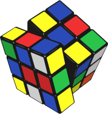
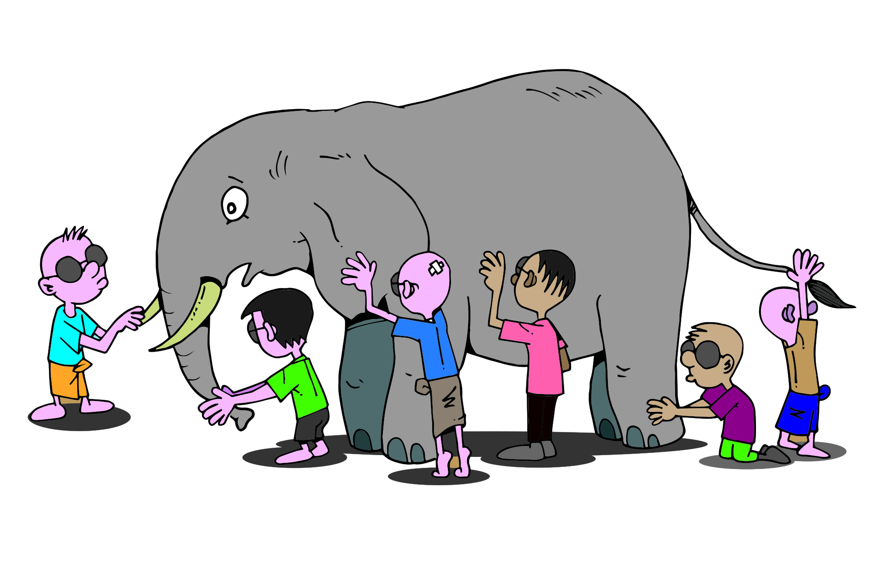
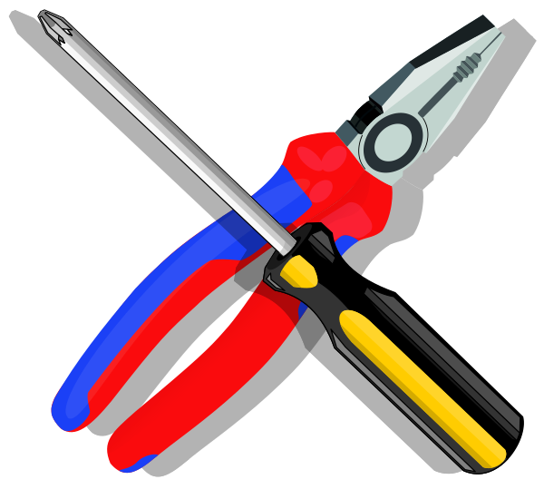
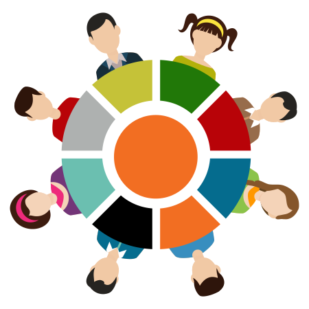
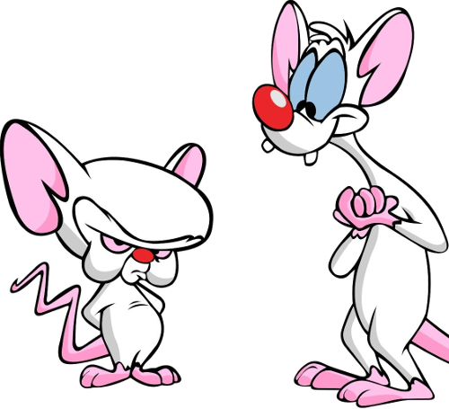
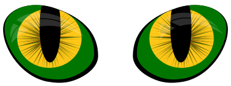

More Readable Code
Good Quality of a Project
Alek Malaszkiewicz at Fractal Soft

Tools
Developers love the tools!
Responsibility
Code
Tests
Problem & Solution
Elephant in the room
Trust

Technology

The change of technology does not change anything.
Best testers
Resources for developers & testers
Computer
Developer & Tester tools
- Revision Control System
- Testing tools
- Debugging tools
- Software metrics
- Profiling tools
- Source code editor with syntax highlighting
Human
Tester or developer
Forgotten resource
The brain
The most important tool for any developer and tester!
Brain of programmer & tester
The brain properties:
- likes order
- likes to focus
- likes patterns
Order
Garbage in, garbage out
Order
Clean code & tests
- simple - use KISS principle
- without repetition - use DRY
- clear, easy to understand
- elegant, be proud of it
- effective
- easy to expand
How to increase the quality
in the project?
Easy tips
Principle scouts
Leave the code cleaner than you found them.
Comments
Don't comment bad code - rewrite it.
Comments
- Comments should explain the code that does not explain itself.
- Comments not fix bad code.
- Comments may lie.
- Remove redundant comments.
Meaningful names
- Don't use shorten names. Don't use too long names.
- Name is wrong, if the required comment.
- Name can be pronounced.
- Class is a noun. Method (function) is a verb.
Focus
Rules of Fight Club
- You do not talk about Fight Club.
- You do not talk about Fight Club.
- If someone says "stop" or goes limp, taps out the fight is over.
- Only two guys to a fight.
- One fight at a time.
- No shirts, no shoes.
- Fights will go on as long as they have to.
- If this is your first night at Fight Club, you HAVE to fight.
Rules of Dev Club
- Break the rules if others agree
- 100 lines / class
- 5 lines / method
- 4 params / method
- 1 instance object / controller
- 80 characters / line
- 1 tab indentation / method
- 1 dot / line
100 lines / class
5 lines / method
4 params / method
# Too many arguments
def add_contact(firstname, lastname, email, phone, mobile, country, city, street,
postcode, skype, facebook, twitter, github, ...
)
...
end
1 instance object / controller
80 characters / line
# Too long line
def very_long_method_name_with_parameters_list(first_parameter, second_parameter, third_parameter)
...
end
1 tab indentation / method
1 dot / line
# Bad
object.some_method.another_method.and_another_method.and_next_another_method
# Better
object.some_method
.another_method
.and_another_method
.and_next_another_method
Define Your Rules
Pattern
Not guess, read the documentation
Convention over configuration
Use design patterns
Use the alphabet
Guard Clause / Error First
# Bad
def lorem
if foo?
if bar?
if baz?
do_something
else
error_baz
end
else
errror_bar
end
else
error_foo
end
end
# Better
def lorem
return error_foo if foo?
return error_bar if bar?
return error_baz if baz?
do_something
end
Will my code be more readable?
Readability
relationship between the code and the reader
Brains of all team members operate similarly
Source code is the important communication tool
Thank you
- Fractal Soft page: fractalsoft.org
- Fractal Soft blog: blog.fractalsoft.org
- Home page: torrocus.com